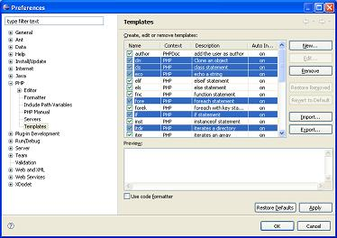

The PDT enables you to export and import Templates. All templates are exported to an XML file and are in the following format:
<?xml version="1.0" encoding="UTF-8" ?>
<templates>
<template autoinsert="true" context="php" deleted="false" description="description" enabled="true" name="for">
for($$i = 0; $$i < 1; $$i++){ }
</template>
Select Windows | Preferences | PHP | Preferences | Templates. The Template Preferences dialog will open.
Select the template(s) for export. Use CTRL-ENTER or CTRL-(Mouse-Click) to select individual templates.

Figure 1 - Export Templates
Click Export to open the Export Template's browser. Select the location to save the XML file to.
The default name is Template; you may enter a different name if required.
If you selected more than one template to
export, all of them will be present in the export XML. Each of the original
Template's is bounded by:
<template> </template>
Select Windows | Preferences | PHP | Preferences | Templates. The Template Preferences dialog will open.
Click Import to open the Import Template's browser. Select the location to import the XML file from and click Open.
The templates contained in the template.xml file will be imported into the list of Templates.
Note: Templates with the same name as an imported template will be overwritten.
In order to prevent a Template from being overwritten, you must rename the existing Template or edit the Template XML file to change the import name of the template.